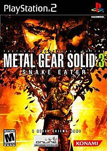
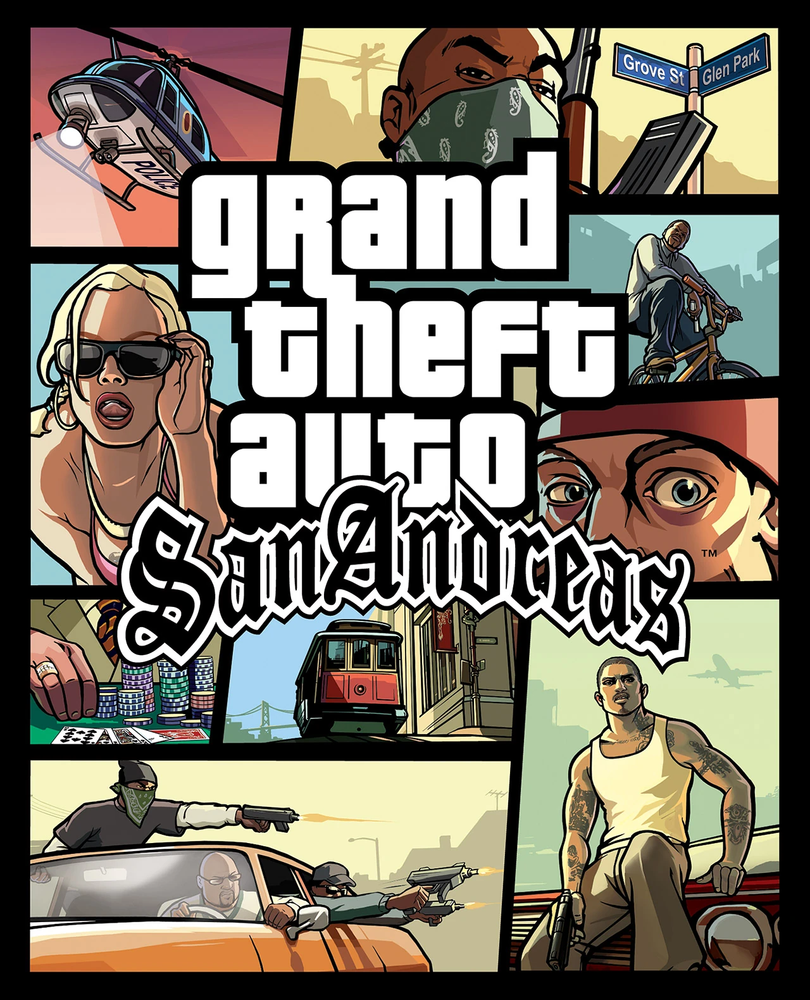
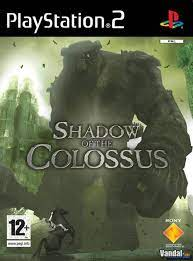
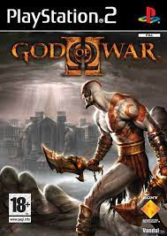
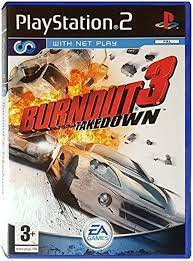

1: Metal Gear Solid 3: Snake Eater

Esta secuela de Metal Gear nos cuenta la historia de Big Boss, el soldado del que Solid Snake y Liquid Snake son clones, en una operación en Rusia para investigar
los planes del enemigo comunista, germen de los Metal Gear.
2: Grand Theft Auto: San Andreas

Grand Theft Auto: San Andreas es un videojuego de acción-aventura de mundo abierto británico desarrollado por Rockstar North y publicado por Rockstar Games.
3: Shadow of the Colossus

Este juego nos lleva a un mundo casi sin vida, vacío, en el que tendremos que derrotar a dieciséis colosos que primero tendremos que encontrar. A lomos de nuestro caballo,
tendremos que orientarnos con nuestra espada.
4: God of War 2: Divine Retribution

Después de ser repudiado por el dios Zeus, Kratos, el nuevo Dios de la Guerra, pierde el favor y reconocimiento del Olimpo. Con una brutalidad que ya es santo y seña de su
personalidad y la sed de venganza después de esta decisión, nuestro protagonista inicia un viaje con el que vengarse y desquitarse de todos estos hechos.
5: Burnout 3 Takedown

Burnout 3: Takedown es un videojuego de carreras desarrollado por Criterion Studios y distribuido por Electronic Arts que salió a la venta el 18 de septiembre de 2004 para las
plataformas Xbox y PlayStation 2.